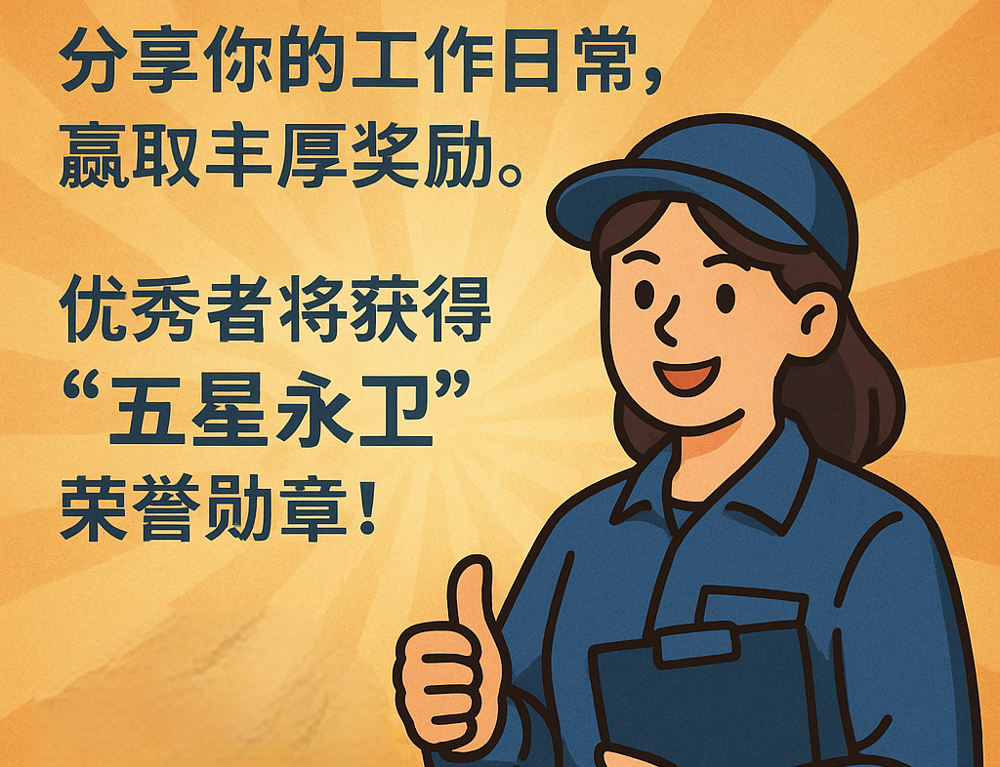
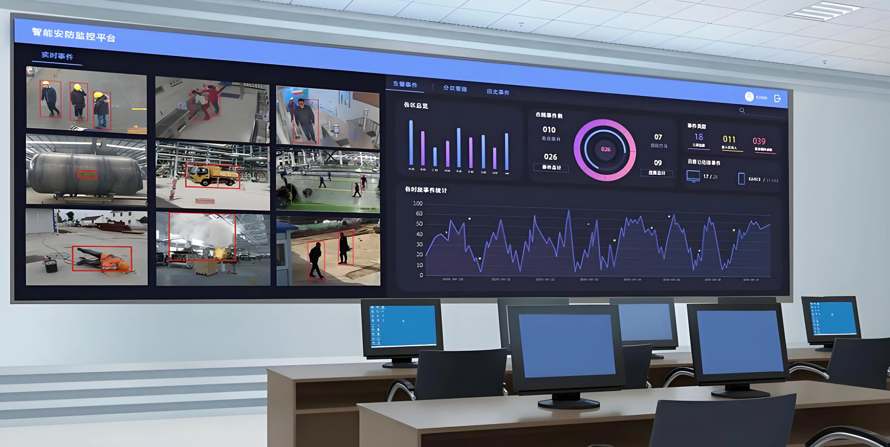

岗友
#保安的一天#
#技能分享#
#岗位鉴别#
#健康挑战#
#八小时之外#
置顶
5月"守护之星"评选活动开始啦！分享你的工作日常，赢取丰厚奖励。优秀者将获得"五星永卫"荣誉勋章！

入职一个月了，今天第一次独立处理突发事件，心情紧张但还算顺利。请教各位前辈，遇到醉酒闹事的客人，有什么好的处理技巧吗？ #新手求助 #岗位日常
【岗位鉴别】商场巡逻岗位实录：月薪5000-6000，双休，工作强度中等，主要负责巡视商场安全、处理顾客纠纷、协助商户安全工作。环境空调全覆盖，公司氛围不错，年终有双薪。缺点是节假日需要轮班，春节期间加班较多。 #岗位鉴别 #真实薪资
【技能分享】如何利用智能监控系统提高工作效率：1. 设置重点区域移动检测；2. 定制异常行为识别算法；3. 链接报警响应系统。这套方法帮我在年度隐患识别评比中获得了第一名，分享给大家！ #技能提升 #科技赋能

03:45
保持冷静很重要，先观察醉酒程度，语气温和但坚定，必要时请求支援。多一分耐心，少一分冲动。